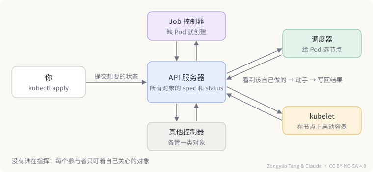
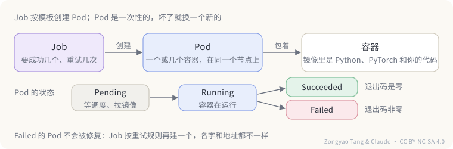
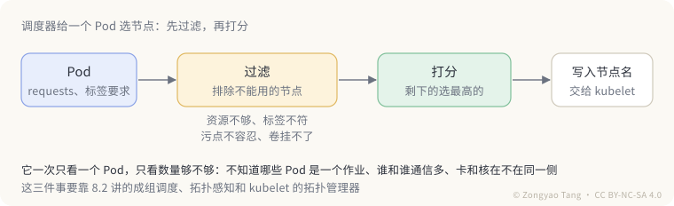

线索是：Kubernetes 的工作方式和你想的“下命令”不一样，它是“写下愿望，由它去实现” → 愿望的基本单位是 Pod，管着 Pod 跑完的是 Job → 每个 Pod 落到哪台机器，由调度器按资源来定 → 容器是隔离的，数据和检查点要另外接进去 → 最后把几个 Pod 组成一个分布式训练作业。这一单元不打算把你变成 Kubernetes 管理员，目标是能读懂一个训练作业的定义，并在它起不来或跑挂时知道去哪里看。
第 8 部分 · 集群与平台（选读）8.1 Kubernetes 的核心对象
这一单元回答一个训练作业交给 Kubernetes 之后，是怎样变成一组在各台机器上运行的进程的？
承接 0.1 的“集群层”。到这里为止讲的都是作业内部；这一部分看作业外面的那一层。
- 声明式：你描述想要的状态，控制器负责让现实向它靠拢
- Pod 是最小的运行单位，Job 负责把它跑到完成
- 调度器按资源请求给每个 Pod 选一台机器
- 数据、检查点和配置怎样进到容器里
- 一个分布式训练作业，是一组互相认识的 Pod
讲解
1声明式：你描述想要的状态，控制器负责让现实向它靠拢
在 Kubernetes 里，你不是命令它“在某台机器上启动这个进程”，而是提交一份描述：“我要有这样一组容器在运行”。系统里有很多叫控制器的程序，各自盯着某一类描述，不断地比较“想要的”和“实际的”，发现不一致就动手调整。

每个角色都只和 API 服务器打交道 几个角色。
- *API 服务器。* 整个集群的“登记处”。所有的描述（叫对象或资源）都存在这里。你用
kubectl apply -f job.yaml做的事，就是把一份描述交给它。 - *控制器。* 很多个独立的程序，每个负责一类对象。它们从 API 服务器读取对象的期望状态和实际状态，做出调整，再把结果写回去。
- *调度器。* 一个特殊的控制器：给还没有分配机器的 Pod 选一台机器。
- *kubelet。* 每台机器（叫节点）上运行的代理。它看到“有一个 Pod 被分配给了我”，就在本机把容器启动起来，并持续汇报它们的状态。
一个对象的两半。 每个对象的描述分成两部分：
spec：你写的，想要的状态。status：系统写的，实际的状态。
控制器的工作就是让
status向spec靠拢。提交一个训练作业时发生了什么（细节在后面几节）：
- 你提交一个 Job 对象，写明要运行什么镜像、什么命令、要多少资源。
- Job 控制器看到它，发现“应该有 1 个 Pod 在跑，实际有 0 个”，于是创建一个 Pod 对象。
- 调度器看到一个没有分配节点的 Pod，为它选一个节点，写进这个 Pod 对象。
- 那个节点上的 kubelet 看到分配给自己的 Pod，拉取镜像，启动容器。
- 容器运行、结束。kubelet 汇报结果，Job 控制器据此判断任务完成还是需要重试。
没有谁在指挥这一串动作。每个参与者只是盯着自己关心的对象，看到该自己做的事就去做。
这种设计的好处，正是 7.4 和 11.1 案例四需要的。 机器坏了、容器崩了，对应的控制器会发现“实际状态不对了”，自动采取行动（重建 Pod）。自愈不是额外加的功能，而是这个工作方式的自然结果。
对排查的意义。 任何时候都可以问系统：这个对象现在是什么状态、最近发生了什么。
kubectl get pods # 列出 Pod 和它们的状态 kubectl describe pod <名字> # 一个 Pod 的详细状态和最近的事件 kubectl logs <名字> # 容器的标准输出 kubectl get events --sort-by=.lastTimestamp # 这个命名空间里最近的事件
这四条命令能回答大部分“我的作业怎么了”的问题。
打个比方像空调的恒温器：你不告诉它“现在制冷十分钟”，而是设定“26 度”。它自己不停地量温度，高了就制冷，到了就停，被人开了窗又会重新启动。
所以排查问题时，思路要从“哪条命令失败了”换成“哪个对象的实际状态和期望状态不一致、是哪个控制器没能把它调整过来”。每个对象上都记着它的状态和最近发生的事件。
出处Kubernetes in Action §4 对象的 spec 与 statusKubernetes in Action §4.3 控制器与事件Kubernetes 文档：Cluster Components- *API 服务器。* 整个集群的“登记处”。所有的描述（叫对象或资源）都存在这里。你用
- 描述里最基本的两种对象。
2Pod 是最小的运行单位，Job 负责把它跑到完成
Pod 是一个或几个紧挨着运行的容器，它们在同一台机器上，共享网络地址。Kubernetes 调度、启动、终止的单位都是 Pod。Pod 自己不会“重来”：它结束了就是结束了。Job 是管 Pod 的控制器，它保证指定数量的 Pod 成功运行到结束，失败了就按规则重建。
容器。 一个容器是一个被隔离起来的进程（以及它的子进程）：有自己的文件系统（来自镜像）、自己能看到的进程和网络。对训练来说，镜像里装着 Python、PyTorch、CUDA 的库和你的代码。同一个镜像在任何节点上运行，环境都相同。
（GPU 的驱动是个例外：它在节点的操作系统里，不在镜像里。容器里的 CUDA 库要和节点上的驱动版本兼容。11.1 案例三那种“新节点上配置不一样”的问题，根源常在这一层。）
Pod。 把一个或几个容器包在一起。它们一定在同一个节点上，共享一个网络地址，可以共享一些目录。绝大多数训练 Pod 只有一个主容器。每个 Pod 有一个状态：
Pending：还没开始运行。可能在等调度，可能在拉镜像。Running：容器在运行。Succeeded/Failed：容器结束了，退出码是零或非零。
Pod 是一次性的。它不会被“修复”或“移动”：节点坏了，上面的 Pod 就没了，替代它的是另一个新建的 Pod，名字、地址都不一样。

三层的关系，和 Pod 会经过的几种状态 Job。 一种控制器，用来运行“会结束的任务”（相对于一直运行的服务）。它的描述里包含一个 Pod 的模板，以及几条规则：
- 要成功完成几个 Pod（
completions），同时运行几个（parallelism）。 - 允许失败重试多少次（
backoffLimit，不写时默认是 6）。 - Pod 失败后是在原地重启容器，还是新建一个 Pod（Pod 模板里的
restartPolicy）。
这和训练的关系。
- *重试是从头运行容器的命令。* Kubernetes 不知道什么是“训练到第几步”。重建的 Pod 重新执行启动命令，训练脚本必须自己检查“有没有检查点，有就从那里继续”（7.4）。
- *检查点要放在容器外面。* 容器的文件系统随 Pod 消失。检查点必须写到挂载进来的持久存储上（后面讲）。
- *分布式作业不能只重启一个进程。* 7.1 讲过，一个进程没了，其余的都卡住。所以分布式训练的失败策略通常是“任何一个 Pod 失败，整组全部重来”。普通的 Job 管不了这种“一组 Pod 共进退”的关系，需要更上层的对象（这一单元最后一节）。11.1 案例四里“让挂住变成退出”，靠的就是这一层的设置。
被抢占和被驱逐。 Pod 也可能不是因为自己出错而结束：节点要维护、有更高优先级的作业需要资源。这时 Pod 会先收到一个终止信号，过一段宽限期（默认 30 秒）才被强制杀掉。训练脚本可以捕获这个信号，利用宽限期存一次检查点。7.4 提到的“被抢占时几乎不丢进度”，就是这样做到的。
两个容易漏掉的细节（都来自 Kubernetes 的文档）：
- *信号只发给容器的主进程。* 文档的说法是终止信号发给每个容器里的 main process。如果启动命令是一层 shell 脚本，或者由
torchrun再拉起训练进程，真正在训练的进程不一定收得到。要确认信号被转发到了保存检查点的那段代码，否则宽限期只是白等 30 秒。 - *被抢占可以不算进重试次数。* Job 有一个
podFailurePolicy字段，可以写一条规则：因为“被打断”（Pod 上带着DisruptionTarget状态）而失败的 Pod 不计入backoffLimit。不设的话，一个在低优先级队列里被抢占了几次的作业，会因为“重试次数用完”而被判定失败。用这个字段要求 Pod 模板的restartPolicy是Never。
读懂一个训练作业的 YAML
下面是一个最简单的单机多卡训练作业。字段名来自 Kubernetes 的核心接口；你的集群实际用的可能是更上层的对象（最后一节），但里面嵌着的 Pod 模板是同一套写法。
apiVersion: batch/v1 kind: Job metadata: name: gpt2-train spec: backoffLimit: 3 # 最多重试 3 次 template: # 下面是 Pod 的模板 spec: restartPolicy: Never # 失败了不原地重启，由 Job 新建 Pod containers: - name: trainer image: registry.example.com/team/train:1.4 command: ["python", "train.py", "--resume", "/ckpt"] resources: limits: nvidia.com/gpu: 8 # 8 张 GPU（8.2） cpu: "64" memory: 512Gi volumeMounts: - {name: data, mountPath: /data, readOnly: true} - {name: ckpt, mountPath: /ckpt} - {name: shm, mountPath: /dev/shm} volumes: - name: data persistentVolumeClaim: {claimName: dataset-pvc} - name: ckpt persistentVolumeClaim: {claimName: ckpt-pvc} - name: shm emptyDir: {medium: Memory, sizeLimit: 64Gi} nodeSelector: nvidia.com/gpu.product: NVIDIA-H100-80GB-HBM3 tolerations: - {key: nvidia.com/gpu, operator: Exists, effect: NoSchedule}逐段对上前面的课程：
command里的--resume：重建的 Pod 会重新执行这条命令，所以它必须能从检查点继续（7.4）。resources：这个 Pod 要 8 张卡、64 个核、512 GB 内存。调度器据此找节点（下一节）。CPU 和内存别给少了：2.4 讲过数据加载要 CPU，0.3 讲过锁页内存。只写了 limits 时，requests 默认等于它。/dev/shm：容器默认的共享内存只有 64 MB。2.4 讲过 DataLoader 的 worker 用共享内存把 batch 传回主进程，6.2 讲过 NCCL 的一种机内传输也用它。不挂大一点，会出现“总线错误”或 DataLoader 莫名退出。这是容器里跑训练最经典的一个坑。volumes：数据集只读挂进来；检查点目录可写，并且在 Pod 消失后仍然存在。nodeSelector：只在带有这个标签的节点上运行（指定 GPU 型号）。标签是 8.2 讲的组件自动打上的，具体的值以你的集群为准。tolerations：GPU 节点通常带着“污点”，拒绝没有声明容忍的 Pod，免得普通任务占了 GPU 机器。
这份 YAML 里没有、但多机训练需要的东西：
- 让几个 Pod 互相找到对方的机制（最后一节）。
- 让容器用上 InfiniBand 网卡的设置（8.2）。11.1 案例三里“退回 TCP”的原因之一，就是容器里没有 RDMA 设备。
- 允许锁页的内存上限。同一个案例的另一个原因。
打个比方像工地上的工人和包工头：工人（Pod）干具体的活，干完或者出了事故就离场。包工头（Job）负责“这项工程要干完”，有人中途走了就再找一个来顶上。
所以训练作业的容错策略写在 Job 这一层：失败后重试几次、每次重试从哪开始。重建出来的是一个全新的 Pod，之前容器里的一切都没了，所以检查点必须存在容器之外。
出处Kubernetes in Action 第 17 章 JobKubernetes in Action §6 终止与宽限期Kubernetes 文档：JobsKubernetes 文档：Pod Lifecycle- Pod 被创建出来之后，第一件事是决定它去哪台机器。
3调度器按资源请求给每个 Pod 选一台机器
每个 Pod 声明自己需要多少 CPU、内存、GPU。调度器对每个待分配的 Pod 做两步：先筛掉不满足条件的节点（资源不够、标签不符、有它不能容忍的污点），再在剩下的节点里按打分选一个。找不到任何合适的节点时，Pod 就停在 Pending。
节点报告自己有什么。 每个节点的 kubelet 向 API 服务器报告它的可分配资源：多少个 CPU 核、多少内存、多少张 GPU（8.2）。节点上还有标签（描述它的属性：机型、GPU 型号、所在的机架）和污点（拒绝某些 Pod）。
Pod 声明自己要什么。 两个数：
requests：调度时的依据。调度器保证一个节点上所有 Pod 的 requests 之和不超过它的可分配量。limits：运行时的上限。CPU 用超了会被限速；内存用超了，容器会被杀掉（表现为“OOMKilled”，注意这是主内存，和 2.1 的显存不足是两回事）。
对 GPU，requests 和 limits 必须相等，而且是整数。对训练作业，CPU 和内存也建议让两者相等：这样的 Pod 属于最高的服务等级（Guaranteed），资源紧张时最后才会被驱逐，而且是 8.2 讲的 NUMA 对齐的前提。
两步选节点。
- *过滤。* 排除不能用的节点：剩余资源小于 requests；标签不满足 Pod 的
nodeSelector或亲和性规则；有 Pod 没有声明容忍的污点；Pod 要的存储卷在那个节点上挂不了。 - *打分。* 对剩下的节点按若干规则打分（资源的均衡程度、亲和性的偏好等），选最高的。
然后把选中的节点名写进 Pod 对象。到此调度器的工作结束，接下来是那个节点上 kubelet 的事。

一个 Pod 从提交到被绑定到节点 调度器不知道的事。 默认的调度器一次只看一个 Pod，只看“数量够不够”。它不知道：
- 这 8 个 Pod 是一个作业，必须同时启动才有意义（8.2 的成组调度）。
- 这个作业的各个 Pod 之间有大量通信，应该放在网络上靠近的节点（5.3、8.2 的拓扑感知）。
- 节点内部，这 8 张卡和这些 CPU 核是不是在同一侧（5.1 的 NUMA，8.2 会讲由 kubelet 处理）。
这三件事正是训练作业最在意的，所以 GPU 集群通常要在默认调度器之外加东西。8.2 整个单元讲的就是这些。
排查：Pod 一直 Pending，或者作业起不来
先看状态，再看事件。
kubectl get pods -o wide # 状态、所在节点 kubectl describe pod <名字> # 重点看最下面的 Events
Pending，Events 里有
FailedScheduling。 调度器找不到节点。消息会直接说出原因，形如 “0/40 nodes are available: 30 Insufficient nvidia.com/gpu, 10 node(s) had untolerated taint…”。读法是：40 个节点里，30 个 GPU 不够，10 个有你没容忍的污点。对应的处理：Insufficient nvidia.com/gpu：没有哪个节点有这么多空闲的卡。注意是“单个节点”：要 8 张卡的 Pod，需要一个节点上同时有 8 张空闲，集群里零散地空着 20 张也没用。Insufficient cpu/memory：GPU 够，但那个节点上的 CPU 或内存被别的 Pod 占了。这种情况很常见，也容易被忽略。didn't match Pod's node affinity/selector：nodeSelector里的标签没有节点满足。检查标签有没有拼错：kubectl get nodes --show-labels。had untolerated taint：缺tolerations。- 存储卷相关的消息：PVC 不存在、还没绑定，或者只能在别的可用区挂载。
Pending，没有
FailedScheduling，而且用了排队系统。 作业可能还没被排队系统放行（8.2）。看对应的排队对象的状态，而不是 Pod。已经分配了节点，但停在
ContainerCreating。 kubelet 在准备容器。Events 里常见的：ErrImagePull/ImagePullBackOff：镜像名写错、没有拉取权限、镜像仓库连不上。训练镜像常有十几 GB，第一次拉取要好几分钟，这段时间属于正常。- 挂载卷失败：存储系统的问题。
反复
CrashLoopBackOff，或者很快变成Error。 容器启动了又退出。这时该看的是容器自己的输出：kubectl logs <名字> # 当前这次的输出 kubectl logs <名字> --previous # 上一次崩溃前的输出
describe的输出里还有上次退出的原因：OOMKilled表示主内存超了 limits；退出码 137 通常是被强制杀掉；其他非零退出码是程序自己的错误。Running，但训练没有进展。 这就不是 Kubernetes 的问题了，回到前面的课程：进程是否都在、是否卡在集合通信上（11.1 案例四）。多机作业要注意：一个 Pod 还在 Pending，其他已经 Running 的 Pod 会在初始化 NCCL 时等它，看起来像“全部卡住”。先确认所有 Pod 都起来了。
这些命令只读不写，可以放心使用。
打个比方像给一场会议订会议室：先排除坐不下的、没有投影的、已经被订走的，再在剩下的里面挑一间最合适的。一间都不剩，会议就只能等。
所以“我的作业为什么不启动”多数时候是一个调度问题：某项资源请求在任何一个节点上都满足不了。调度器会把原因写在 Pod 的事件里。
- 容器被调度到某台机器上启动了。但它是一个隔离的环境，训练需要的东西还不在里面。
4数据、检查点和配置怎样进到容器里
容器自己的文件系统是临时的，而且每个节点上都一样。训练需要的三样东西要另外接进来：数据集（很大，只读）、检查点目录（要在 Pod 消失后仍然存在）、配置和密钥。Kubernetes 用“卷”把外部的存储挂载成容器里的一个目录。
卷的基本概念。 Pod 的描述里列出若干个卷，每个卷说明“东西从哪来”；每个容器再说明“把哪个卷挂到我的哪个目录”。常见的来源：
- *持久卷（通过 PersistentVolumeClaim 申请）。* 独立于 Pod 存在的存储，Pod 没了它还在。背后可以是网络文件系统、并行文件系统、云上的块存储等。
- *
emptyDir。* 一个随 Pod 创建和销毁的空目录，放在节点的本地盘上或内存里。适合放临时文件和缓存。上一节例子里的/dev/shm用的就是内存版的。 - *
hostPath。* 直接使用节点上的某个目录。能用到节点的本地高速盘，但 Pod 换一个节点就看不到原来的内容了。 - *ConfigMap 和 Secret。* 把配置文件、密钥作为文件挂进来。
三类需求。
*数据集。* 特点是大、只读、很多 Pod 同时读。通常放在共享的网络存储上，以“只读、可多处同时挂载”的方式挂进来。它的读取速度直接决定了 0.1 管道的第一段。7.4 讲过把小文件打包成分片的原因；5.3 讲过读数据走的是前端网络。如果共享存储不够快，一个常见的做法是作业启动时先把数据拷到节点的本地盘（
emptyDir或hostPath），之后从本地读。*检查点。* 特点是要可写、要持久、多机训练时要所有 Pod 都能访问。必须是持久卷。7.4 讲的并行写检查点，要求这个卷支持多个 Pod 同时写（并行文件系统或对象存储）。
*配置。* 超参数文件、访问数据和镜像仓库的凭据。
访问模式。 持久卷有几种访问模式，申请时要选对：
- 只能被一个节点读写：单机训练存检查点够用。
- 可以被多个节点只读：适合数据集。
- 可以被多个节点同时读写：多机训练的检查点目录需要它，不是所有存储系统都支持。
模式不对，表现是第二个 Pod 挂载失败、卡在
ContainerCreating。和性能的关系。 存储是 0.1 那条管道最容易被忽略的一段，因为它在作业的定义里只是几行 YAML。出问题时的表现前面都讲过：
- GPU 利用率锯齿，CPU 却不忙：worker 们在等存储（2.4）。
- 每隔固定步数吞吐下降：在写检查点，而且写盘阻塞了训练，或者挤占了读数据的带宽（7.4）。
- 同一个作业白天慢、晚上快：共享存储上有别的用户。
打个比方像酒店的房间：家具是标配（镜像），退房后一切恢复原样。你自己的行李（数据）要带进来；重要的东西（检查点）要存进不随退房清空的保险库。
所以一个训练作业的 YAML 里，卷的部分决定了三件事：数据从哪里读、读得多快；检查点存到哪里、能不能在重启后找回；多个 Pod 能不能同时读写同一份东西。
承接 调度器按资源请求给每个 Pod 选一台机器大规模数据读取：把海量小文件打包成分片，顺序地读分布式的检查点：每个进程各存各的，而且不让训练停下来等训练集群有两张网：前端管数据和管理，后端只跑 GPU 之间的 RDMA后面会用到 一个分布式训练作业，是一组互相认识的 Pod出处Kubernetes in Action 第 7 章 卷Kubernetes in Action 放在内存里的 emptyDirKubernetes in Action 持久卷的访问模式Kubernetes 文档：VolumesKubernetes 文档：Persistent Volumes- 前面的例子是单机的。把它扩展到多机，要多解决几个问题。
5一个分布式训练作业，是一组互相认识的 Pod
多机训练时，每台机器上运行一个 Pod，每个 Pod 里是若干个训练进程。除了各自启动之外，它们还需要三样东西：知道彼此的地址；知道自己是第几号、一共有几个；作为一个整体被调度、启动和失败。这些由比 Job 更上层的对象提供，比如 Kubeflow 的训练作业。
多机训练启动时需要什么。 回顾 7.1 和 6.2：
- 每个进程要知道自己的编号（rank）和进程总数。
- 所有进程要能找到同一个“会合点”来完成初始的握手（6.2 的带外握手）。通常是 0 号进程所在的地址。
- 握手之后，NCCL 自己去发现和建立真正传数据的连接（InfiniBand）。
在裸机上，这些由
torchrun或mpirun加一份主机列表来完成。在 Kubernetes 上，Pod 的地址是动态分配的，事先不知道。问题一：稳定的名字。 Kubernetes 可以给一组 Pod 分配固定的、可以预知的网络名字（通过一种不做负载均衡的 Service）。于是“0 号 Pod”的名字在提交作业时就确定了，其他 Pod 可以把它当作会合点。
问题二：告诉每个进程它是谁。 训练作业的控制器在创建每个 Pod 时，往里面注入环境变量：会合点的地址和端口、进程总数、这个 Pod 的序号。容器里的启动命令（
torchrun之类）读这些变量。用 MPI 启动的方式则是由一个“启动器”Pod 通过远程执行在各个“工作”Pod 里拉起进程。问题三：共进退。 两个方面：
- *一起启动。* 只有一部分 Pod 被调度上了的时候，它们占着 GPU 空等，什么也做不了。8.2 讲的成组调度解决这个问题。
- *一起失败。* 任何一个 Pod 失败，其余的应该立刻被终止并整体重启。这正是 11.1 案例四缺的那一环：进程死了，其余的无限期地等。
谁来做这些。 在核心的 Job 之上，有几层专门的对象：
- *JobSet。* 把几个 Job 组成一个整体来管理，提供稳定的网络名字和整体的失败策略。
- *Kubeflow Trainer 的训练作业。* 面向机器学习的一层：你说明用哪个训练运行时（PyTorch 等）、几个节点、每个节点多少资源，它来生成底下的 JobSet 和 Pod，并注入框架需要的环境变量。它的前一代是按框架区分的对象（比如 PyTorchJob），很多集群仍在使用。
你的集群用的是哪一种，看一下实际提交的 YAML 里
kind那一行就知道了。不管是哪一种，展开之后里面都是上上节那样的 Pod 模板。进程编号和物理位置。 7.3 讲过：并行方案假设了“哪些进程在同一台机器上”。在 Kubernetes 上，这取决于每个 Pod 里有几个进程、Pod 的序号怎样映射到 rank。常见的安排是一个节点一个 Pod、一个 Pod 里 8 个进程对应 8 张卡，rank 按 Pod 序号连续编号。这样“相邻的 8 个 rank 在同一台机器上”，张量并行组可以放在机内。如果换成“一张卡一个 Pod”，同一个作业的 Pod 可能被分散到很多节点上，这个假设就不成立了。
打个比方像一支足球队出征：不只是把 11 个人分别送到球场。每个人要知道队友是谁、自己踢什么位置；而且少一个人，比赛就没法开始。
所以你提交的通常不是一个裸的 Job，而是一个“训练作业”对象。它替你创建一组 Pod，配好让它们互相找到的名字和环境变量，并规定“一个失败、全体重来”。
后面会用到 成组调度与排队：要么全给，要么不给
串起来
Kubernetes 是声明式的：你提交一份描述，各种控制器不断地把现实调整成描述的样子。Pod 是运行的最小单位，Job 负责把 Pod 跑到完成并在失败时重试。调度器按每个 Pod 声明的资源请求给它选节点。数据和检查点通过卷挂进容器。分布式训练作业是一组 Pod，加上让它们互相找到对方的网络名字和环境变量。
考考自己
不看讲解，用自己的话讲一遍。
- Kubernetes 的“声明式”是什么意思？它和直接在机器上运行命令有什么不同？
- Pod 和 Job 各是什么？Pod 失败之后会发生什么？这对检查点的存放位置有什么要求？
- Kubernetes 的调度器是怎样为一个 Pod 选择节点的？资源的 requests 和 limits 有什么区别？
- 训练作业通常需要挂载哪几类存储？为什么检查点不能写在容器自己的文件系统里？
- 在 Kubernetes 上运行多机训练，除了启动多个 Pod 之外，还需要解决哪些问题？
术语
- Pod
- 一组一起运行的容器，调度的最小单位
- Job
- 运行到完成的任务
- controller
- 控制器
- scheduler
- 调度器
- kubelet
- 每台机器上的节点代理
- PersistentVolume
- 持久卷
- taint / toleration
- 污点与容忍